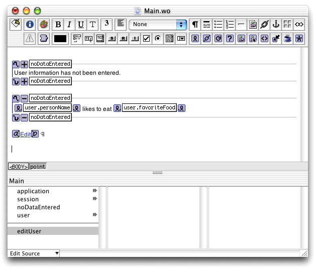

| PATH |

In this section you'll add elements to the Main component
so that it displays the user information after it has been edited.
The component needs a WOConditional element so that user information
is displayed only if the user entered data in the UserEdit page.
After the modifications are made, Main.wo should
look similar to Figure 6-2.
noDataEntered to Main.java,
as shown in Listing 6-5.Listing 6-5 The noDataEntered method of the Main.java class
public boolean noDataEntered() {
if (user == null || user.entryIncomplete()) {
return true;
}
else {
return false;
}
}Main.wo in
WebObjects Builder.user instance
variable of type User, including accessor methods.User
data has not been entered.condition attribute
to noDataEntered. likes to eat " after
it, and add another WOString.value attribute
to user.personName and
the second's to user.favoriteFood.condition attribute
to noDataEntered.Click "+" in the WOConditional so that it changes to "-". This makes it so that only one of the WOConditional elements's content is displayed at a time. See "Conditional Display With WOConditional Elements" for more information.
editUser,
which returns a UserEdit component.Edit as
its caption.action attribute
to the editUser action.Main.wo.editUser method
in Main.java so that
it looks like Listing 6-6.Listing 6-6 Main component's editUser action method
public UserEdit editUser() {
UserEdit nextPage = (UserEdit)pageWithName("UserEdit");
// Initialize your component here
if (user == null) {
user = new User();
}
nextPage.setUser(user); // send the user object to the UserEdit page
return nextPage;
}Main.java.Figure 6-2 Main.wo

© 2001 Apple Computer, Inc.